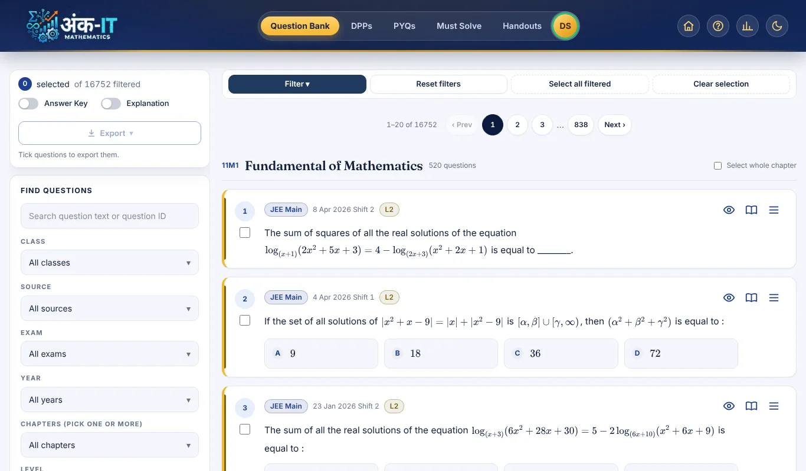

NTA-style online tests
A full-screen test with timer, question panel, mark for review and auto-submit, just like the real exam.
Practise math with a question bank, PYQs (previous-year papers), DPPs, handouts and NTA-style online tests, all with full solutions, for Class 11 and 12 and for exams such as JEE, KCET, NDA and IAT.

Real screens from the dashboard: question bank, DPP builder, past papers, Must Solve, handouts and the online test window.
Find any question in seconds
Filter 16,000+ questions by class, source, exam, year, chapter, level and type. Every question comes with its answer and a full solution.

A ready-to-print DPP in one click
Pick chapters and subtopics, set the toughness and the mix of previous-year and practice questions, and get a clean practice sheet with answer key and explanations.

Every paper, in exam format
Open any JEE Main shift or other past paper exactly as it was set, or go chapterwise through all years. Download with the answer key.

Solve the questions that matter most
Questions that came again and again in JEE, in the same or a very similar form, plus sure-shot questions that are bound to come. Solve these first.

Handwritten revision notes for every chapter
Neatly handwritten notes for all chapters of Class 11 and 12. Read them in the built-in viewer, or download them to revise offline.

The real exam screen, before the real exam
A full-screen, timed test with the question palette, mark for review and auto-submit, followed by your score, rank and topic-wise report.
Practise, test yourself and track your progress without juggling PDFs, apps and notebooks.
NTA-style online tests
A full-screen test with timer, question panel, mark for review and auto-submit, just like the real exam.
Instant reports and ranks
Score, accuracy, rank in your school and all-India, topic-wise analysis and time per question.
16,000+ question bank
Filter by chapter, topic, level, exam and year. Every question comes with its answer and a full solution.
Past papers 2000–2026
JEE Main, JEE Advanced and more, paper by paper and chapter by chapter, with answer keys.
DPPs, Must Solve and handouts
Daily practice sheets, hand-picked must-solve questions and handwritten revision notes for every chapter.
Built for teachers
Make a test in minutes, share one link with your class and see every student's result.
Create your free account
Click Login, choose Student or Teacher and continue with Google. Avanti students use their Student ID.
Practise chapter by chapter
Open the question bank, DPPs, previous-year papers and Must Solve. Check every answer against the full solution.
Take tests and track progress
Attempt NTA-style tests, see your score, rank and weak topics, and come back stronger next week.
24 chapters and 290 subtopics, with the number of JEE Main and JEE Advanced questions asked from each. Open a chapter to see its subtopics.
Linear Programming Problem
Out of syllabus
Mathematical Reasoning
Out of syllabus
Solution of Triangle
Out of syllabus
Height and Distance
Out of syllabus
8,772 previous-year math questions, paper by paper. Open an exam to see its questions by chapter and year.
Engineering entrance for NITs, IIITs and other institutes; the qualifier for JEE Advanced.
The entrance examination for admission to the IITs.
The IIT entrance examination until 2012; continued as JEE Advanced.
The all-India engineering entrance until 2012; replaced by JEE Main.
Karnataka's common entrance test for professional courses.
The UPSC entrance for the National Defence Academy: the Mathematics paper.
The IISER Aptitude Test for the BS-MS programmes.
Build an online test from the question bank, share one link with your class and get a ranked report the moment students finish.
Premium is a one-year membership. Avanti students and teachers get it free.
Free
For every student
Premium
For students who want it all
Avanti
For Avanti students
Free
For every teacher
Premium
For teachers who run a class
Avanti
For Avanti teachers
Yes, you can start free. Sign in with Google to use the question bank with solutions, online tests and your reports. Premium adds PDF downloads and printing, all-India ranks, comparison with all students and handouts.
Students of Class 11, Class 12 and droppers preparing for math in JEE Main, JEE Advanced, KCET, NDA, IAT and similar exams. Teachers can use it to make tests and track their students.
Premium is ₹299 a year for students and ₹599 a year for teachers. Avanti students get Premium free.
Math questions filtered by chapter, topic, level, exam and year, with solutions, plus previous-year papers, daily practice problems (DPPs), Must Solve lists and revision handouts.
Use your Google account. Avanti students can sign in with their Student ID instead. You choose Student or Teacher the first time.
Yes. Teachers whose school has been approved can build an online test from the question bank, share one link with their students and see results and ranks.
Create your free account and start with any chapter today.
Login or registerContinue to the dashboard